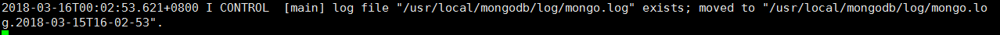

linux服务器mongodb数据库安装
- 创建一文件夹，存放将要下载的mongodb文件.
mkdir /usr/local/mongodb - 下载你需要的mongodb文件https://fastdl.mongodb.org/linux/mongodb-linux-x86_64-ubuntu1404-3.6.3.tgz
wget https://fastdl.mongodb.org/linux/mongodb-linux-x86_64-ubuntu1404-3.6.3.tgz - 解压文件,解压到mongodb文件夹下
tar -xvf mongodb-linux-x86_64-ubuntu1404-3.6.3.tgz -C /usr/local/mongodb/ - 创建数据保存路径
mkdir /usr/local/mongodb/data - 创建数据保存路径
mkdir /usr/local/mongodb/log - 修改解压后生成的文件，
mv mongodb-linux-x86_64-1404-3.6.3 server - 进入mongodb文件的bin目录下，准备启动mongodb
cd usr/local/mongodb/server/bin/ 启动和配置文件和日志保存的路径
./mongod --dbpath=/usr/local/mongodb/data/ --logpath=/usr/local/mongodb/log/mongo.log出现下面所显示的证明 启动和配置文件和日志保存路径成功

这个时候，mongodb已经启动完成了，如需对mongodb进行操作，需要另打开一个终端，链接到服务器，进入到usr/local/mongodb/server/bin/目录下
cd usr/local/mongodb/server/bin/- 输入命令启动mongodb数据库
./mongo提示Server has startup warnings: 服务已经启动，然后就可以对数据库进行操作了，比如增，删，改，查.完成了，是不是很简单啊！
- 检查是不是这个数据库已经开启了
netstat -lanp | grep "27017"显示如下图片证明数据库已经开启

我还是感觉比较麻烦，要是一开机能自己启动那该多好啊！！！
- 进入/etc,编辑rc.local文件
vi rc.local - 加入下面这行代码
/usr/local/mongodb/server/bin/mongod --dbpath=/usr/local/mongodb/data --logpath=/usr/local/mongodb/log/mongo.log --logappend --port=27017 --fork --auth 然后在终端中执行一次设置的命令,查看端口再一次,使配置文件生效
大功告成了。关闭数据库
./mongod --dbpath /usr/local/mongodb/data --shutdown